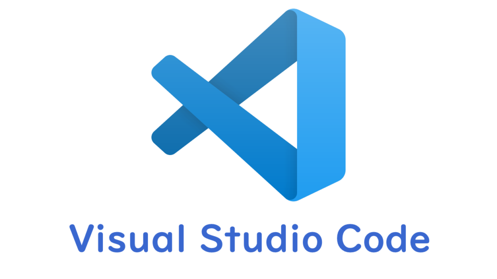
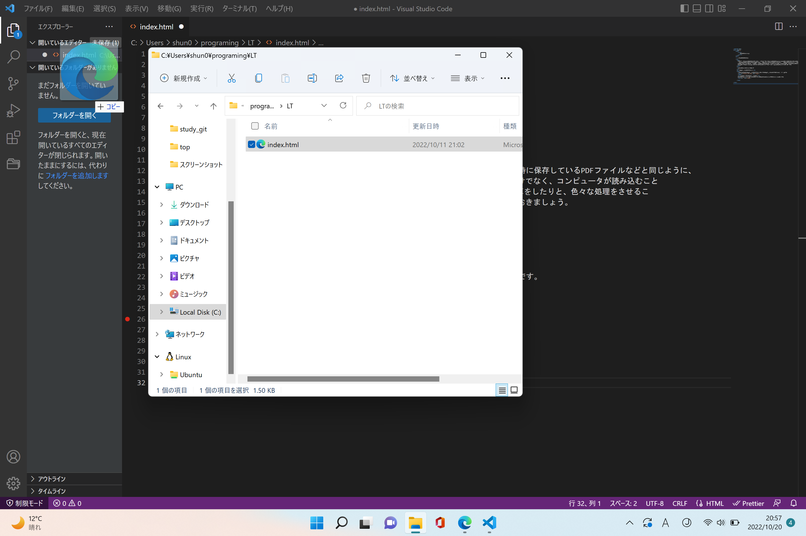

皆さんも毎日様々なWEBサイトを見ることだろうとおもいます。そのWEBサイトは普段授業の時に保存しているPDFファイルなどと同じように、 一つの文書として作成することができます。ただしWordのように普通に日本語を打ち込むだけでなく、コンピュータが読み込むこと のできる、プログラミング言語という言葉で文字の色を指定したり、写真を挿入したり、計算をしたりと、色々な処理をさせるこ とができます。つまり普段提出しているWordファイルのもうちょっと複雑なやつ、と思っておきましょう。
まずVSCodeというエディターをインストールします。エディターとは文字列を打ち込む場所です。
次にエクスプローラーで空のフォルダを作成し、VSCodeにドラッグアンドドロップします。VSCode上のフォルダの中に「新しいファイル」をクリックしてファイルを作ります。ファイル名はindex.htmlとしましょう。
VSCodeのファイルをWEBブラウザのURLを打ち込むところにドラッグアンドドロップしてエンターを押せば完了❣
主にHTML,CSSという2言語を使って書きます。言語の詳しい説明は省きますが、ググればいくらでも出てきます。すぐ覚えれます。 では実際に私がつくったサイトを見ていただきましょう。
こちら